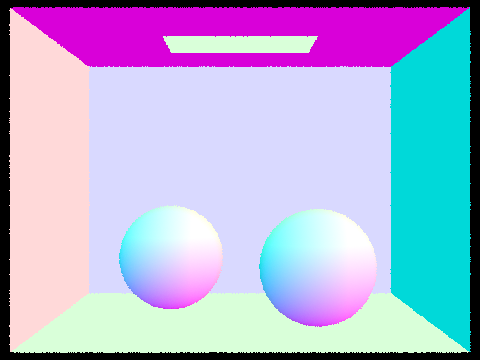
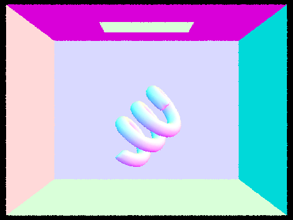
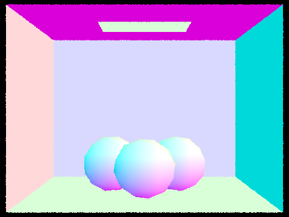

Use this section to write an overview of the assignment. All of the text in your write-up should be in your own words. If you need to add additional HTML features to this document, you can search the http://www.w3schools.com/ website for instructions. To edit the HTML, you can just copy and paste existing chunks and fill in the text and image file names appropriately.
If you are well-versed in web development, feel free to ditch this template and make a better looking page. Just make sure that you include all the components as we've laid them out here.
Part 1: Ray Generation and Intersection
In Part 1, we start with the basics of ray generation and intersection of triangles and spheres, both of which are primitives. In basic ray tracing, each pixel of an image is colored by casting a ray through it and collecting the radiance along the path of the ray, particularly when it intersects with an object.
Ray Generation
First, we need to generate the ray for each respective pixel. A ray consists of an origin, a direction vector, and other data such as tmax and tmin. Given an image coordinate (x,y), we first transform the coordinate from 2-dimensional image space to 3-dimensional camera space. Here is how to do it. The image coordinate provided is normalized, so we need to perform a translation to center it along our new z axis. Then, we scale it to our virtual camera sensor size before finally shifting the image plane to z=-1. Subtracting the new image coordinate from the origin gives us the direction vector for the ray in camera space. Lastly, we want to transform the ray (direction vector) into world space and normalize the direction vector.
Triangle and Sphere Intersection
The two types of primitives that we want to test ray intersection on are triangles and spheres. Triangle intersection is implemented using the Moller Trumbore Algorithm. The algorithm takes three vertex positions and a ray as inputs and outputs the t value where the ray passes the triangle plane and two of the three barycentric coordinates. We can obtain the third barycentric coordinate by subtracting the two barycentric coordinates from 1. Now, if t is within our ray's tmax and tmin and all three barycentric coordinates show that the ray passes through somewhere inside the triangle, then we have a valid intersection. Ray intersection on a sphere on the other hand, is calculated using the standard sphere formula and calculating the t value for when the ray intersects the sphere using the quadratic formula. We can have three outcomes for ray-sphere intersections: the ray intersects at no points, the ray intersects at one point, and the ray intersects at two points. In the normal case, a ray usually enters a sphere at one point and exits a sphere at another point, both of which count as intersections. However, we want the one closer to our origin that is within tmax and tmin. If any intersection is valid, we use the surface normal and surface material to determine what color the ray should see.
|

|

|
|

|

|